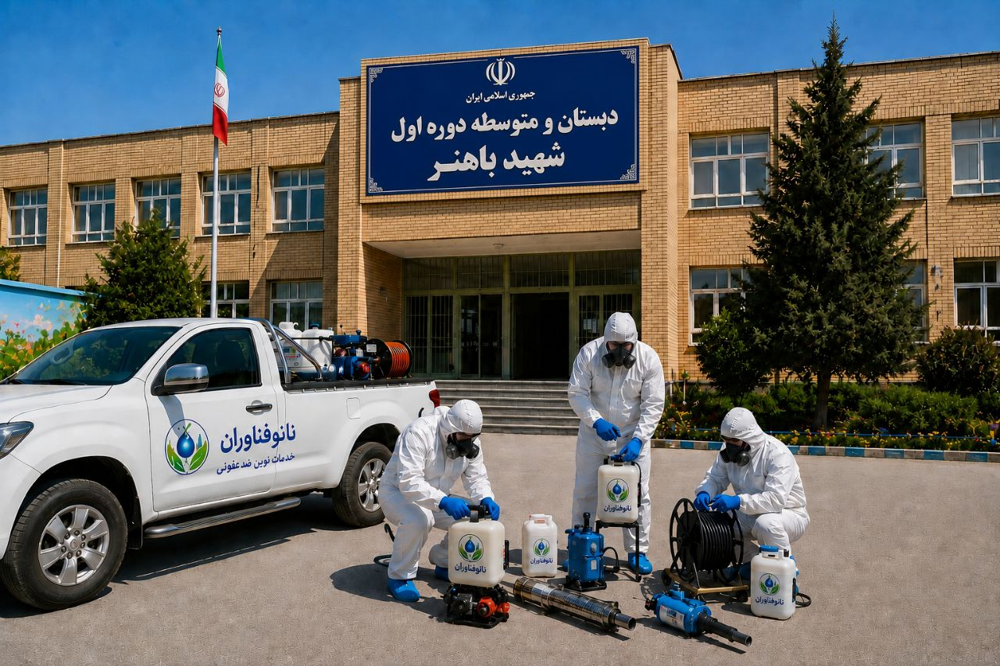
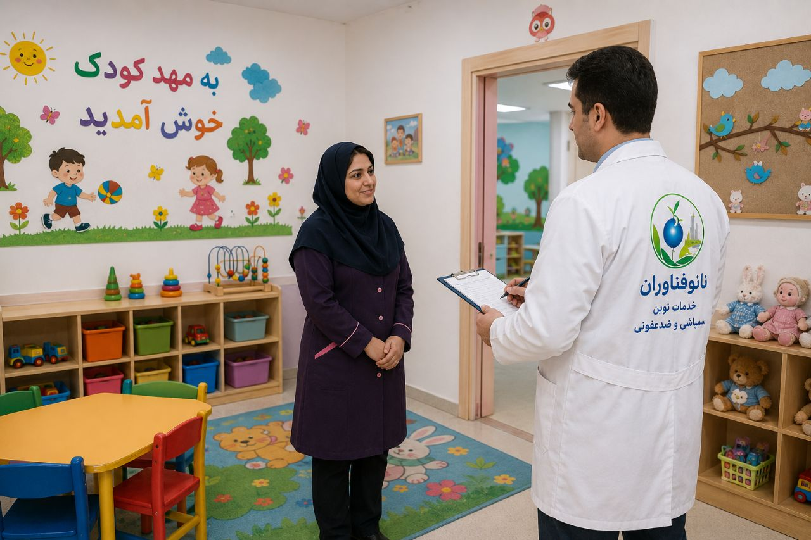
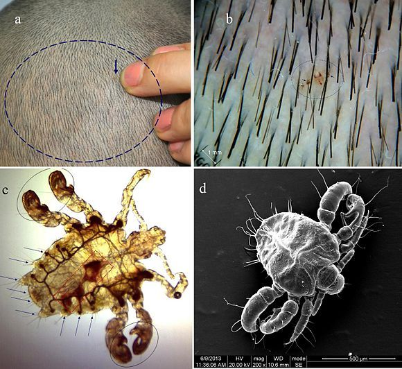
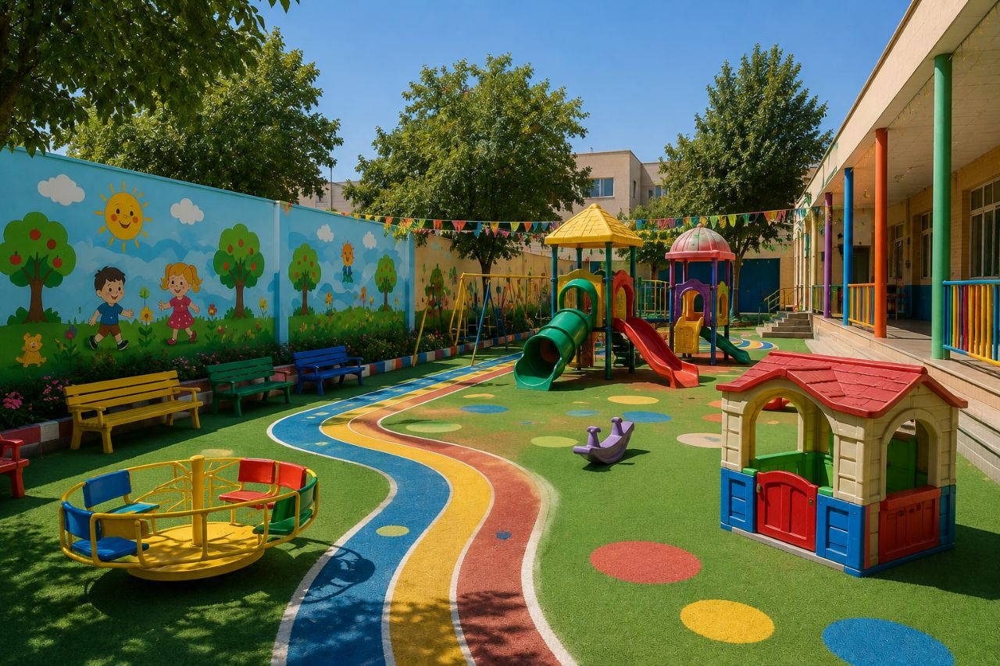
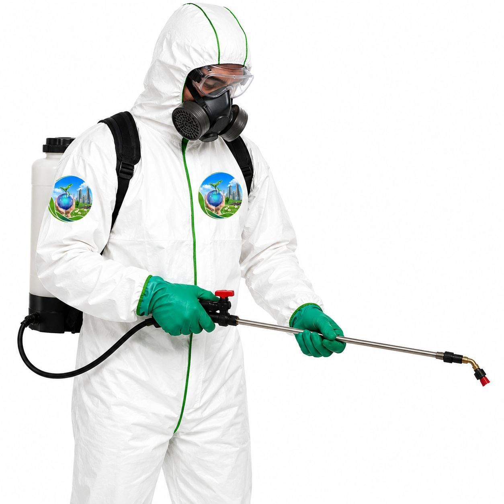
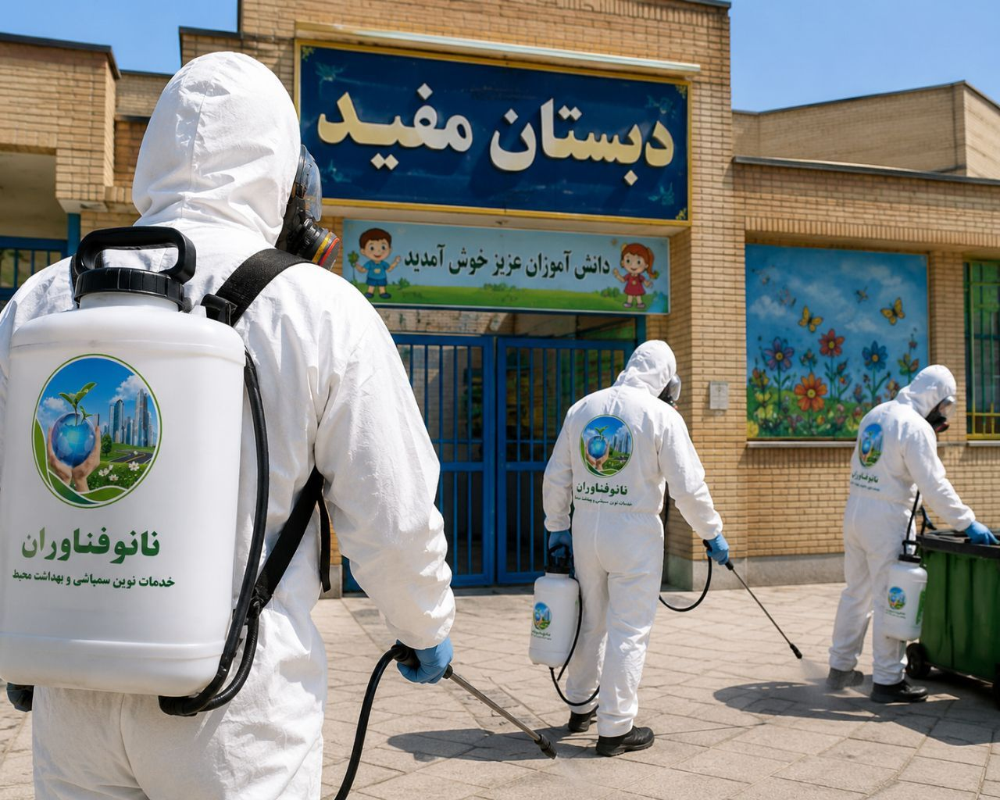

مدارس، مهدکودکها، پیشدبستانیها و مراکز آموزش عالی، قلب تپنده نظام آموزشی هر جامعهای هستند. این مکانها روزانه پذیرای هزاران دانشآموز، کودک، دانشجو، معلم و کادر آموزشی هستند که آینده کشور را میسازند. با توجه به اینکه دانشآموزان و بهویژه کودکان مهدکودک و پیشدبستانی ساعتهای طولانی از روز را در این فضاها سپری میکنند، حفظ بهداشت و ایمنی محیطهای آموزشی از اهمیت ویژهای برخوردار است.
مهدکودکها و پیشدبستانیها به دلیل حضور کودکان با سیستم ایمنی ضعیفتر، تماس نزدیک با یکدیگر و قرار گرفتن در معرض مواد غذایی و بازیهای گروهی، یکی از حساسترین محیطهای آموزشی محسوب میشوند. به همین دلیل، کنترل آفات در مهدکودکها باید با حساسیت بسیار بالاتری نسبت به سایر محیطها انجام شود و استفاده از سموم بیخطر و روشهای غیرشیمیایی در اولویت قرار گیرد.
متأسفانه، مدارس و مهدکودکها به دلیل وجود مقدار زیادی غذا، آب و رفتوآمد بالای افراد، یکی از مستعدترین مکانها برای رشد و تکثیر انواع آفات و حشرات موذی هستند. وجود آفات در محیطهای آموزشی، نهتنها تهدیدی جدی برای سلامت کودکان و دانشآموزان است، بلکه میتواند باعث اختلال در تمرین، ایجاد اضطراب و کاهش کیفیت یادگیری شود. در این میان، وجود حشراتی مانند شپش که هر ساله تعداد زیادی از دانشآموزان به ویژه دختران را درگیر میکند، نشاندهنده لزوم توجه بیشتر به بهداشت مدارس و مهدکودکها است.
در این مقاله جامع از شرکت سمپاشی نانوفناوران بهداشت تهران، به بررسی کامل چالشهای کنترل آفات در محیطهای آموزشی با تأکید ویژه بر مهدکودکها و پیشدبستانیها، مهمترین آفات، استانداردهای بهداشتی و روشهای تخصصی سمپاشی مراکز آموزشی میپردازیم.

آفات مانند سوسک، موش، مورچه و کنهها میتوانند ناقل بیماریهای خطرناکی مانند سالمونلا، سالک، تب مالت، آلرژی و حتی مشکلات ریوی باشند. مدارس و مهدکودکها با تجمع بالای کودکان و دانشآموزان، به سرعت میتوانند به کانون انتشار بیماریها تبدیل شوند. سمپاشی منظم این مراکز مانع از شیوع این بیماریها خواهد شد. برای مثال، شپشها میتوانند بیماریهایی مانند تب تیفوسی و تب خندق را منتقل کنند و در مهدکودکها به سرعت بین کودکان پخش میشوند.
وجود حشرات و جوندگان در محیط مهدکودک یا مدرسه میتواند موجب اضطراب، ترس و عدم تمرکز کودکان و دانشآموزان شود. دیدن یک سوسک یا موش در کلاس درس یا فضای بازی، نهتنها آرامش کودکان را برهم میزند، بلکه میتواند خاطرات ناخوشایندی را برای آنها رقم بزند. رعایت اصول بهداشتی و اجرای سمپاشی دورهای، محیطی امنتر و آرامتر برای یادگیری و بازی کودکان فراهم میکند.
حشراتی مانند موریانهها و موشها میتوانند به تجهیزات چوبی، کابلهای برق، لوازم تحریر، کتابها و اسباببازیهای کودکان آسیب برسانند. موشها با جویدن سیمهای برق، خطر آتشسوزی را افزایش میدهند. موریانهها نیز با تخریب سازههای چوبی، میتوانند خسارتهای سنگینی به ساختمانهای آموزشی وارد کنند.
مهدکودکها و مدارس برای جلب اعتماد والدین و کسب مجوزهای لازم، موظف به رعایت استانداردهای سختگیرانه بهداشتی هستند. بازرسان بهداشت محیط به طور دورهای از این مراکز بازدید میکنند و در صورت مشاهده هرگونه آلودگی، ممکن است مرکز آموزشی را جریمه یا حتی تعطیل کنند. داشتن محیطی عاری از آفات، یکی از مهمترین عوامل در انتخاب مهدکودک توسط والدین است.

شپش یکی از رایجترین و همهگیرترین حشرات در مدارس و مهدکودکها، به ویژه در میان کودکان و دختران است. این حشرات کوچک خونخوار روی پوست و مو زندگی میکنند و از علائم وجود آنها، سوزش و خارش شدید پوست است. شپشها انواع مختلفی دارند از جمله شپش سر (رایجترین در مهدکودکها)، شپش بدن (که در لباسها زندگی میکنند) و شپش پرندگان. وزارت بهداشت هر ساله برنامههای شناسایی و کنترل پدیکلوز را در مدارس و مهدکودکها اجرا میکند و این موضوع یکی از اولویتهای بهداشت مدارس محسوب میشود.
⚠️ هشدار ویژه مهدکودکها: شپشها در مهدکودکها به سرعت از طریق تماس مستقیم، استفاده مشترک از شانه، کلاه و وسایل شخصی بین کودکان منتقل میشوند. تشخیص و درمان بهموقع، کلید جلوگیری از همهگیری در مرکز است.
سوسکها یکی از رایجترین و خطرناکترین آفات در محیطهای آموزشی هستند. آنها ناقل باکتریهای بیماریزا مانند سالمونلا و ایکولی هستند و میتوانند مواد غذایی و سطوح را آلوده کنند.
سوسک آلمانی (سوسک ریز کابینتی): کوچکترین و مقاومترین سوسک که در محیطهای گرم و مرطوب مانند آشپزخانهها، آبدارخانهها و بوفهها زندگی میکند.
سوسک آمریکایی (سوسک فاضلاب): بزرگترین سوسک که از طریق لولههای فاضلاب وارد ساختمان میشود و معمولاً در زیرزمینها و تاسیسات یافت میشود.
موشها در مدارس و مراکز آموزشی، علاوه بر انتشار بیماریهایی مانند هانتاویروس و سالمونلا، میتوانند تجهیزات الکترونیکی و کابلهای برق را تخریب کنند. جوندگان در زیرزمینها، انبارها، آشپزخانهها و فضاهای پشتی مدارس لانهسازی میکنند.
کنهها یکی از خطرناکترین حشرات برای کودکان و دانشآموزان هستند. این موجودات میتوانند با گزیدن فرد، بیماریهای مختلفی مانند تب کریمه کنگو را که در سریعترین زمان باعث مرگ میشود، منتقل کنند. گزش کنه ممکن است بدون درد باشد اما واکنشهای آلرژیک و بیماریهای تبدار را به دنبال داشته باشد. در مهدکودکهایی که فضای سبز و حیاط دارند، کنهها تهدیدی جدی محسوب میشوند.
مگسها توانایی این را دارند که صدها هزار میکروارگانیسم را با خود حمل کنند و خطر انتقال بیماری بین کودکان و دانشآموزان را به میزان قابل توجهی افزایش میدهند. مگسها در بوفهها، سالنهای غذاخوری و نزدیکی سطلهای زباله تجمع میکنند.
مورچهها به دلیل جستجوی غذا و رطوبت، به راحتی وارد کلاسها، بوفهها و انبارهای مواد غذایی میشوند و میتوانند مواد غذایی کودکان را آلوده کنند. در مهدکودکها، مورچهها به سرعت به سمت مواد غذایی و میوههای باقیمانده جذب میشوند.
در مدارس و مهدکودکهای دارای سازههای چوبی، مبلمان چوبی یا کاغذ و کتابهای زیاد، موریانهها میتوانند خسارتهای جبرانناپذیری به ساختمان و تجهیزات وارد کنند.
ساسها در مهدکودکها، بهویژه در فضاهای استراحت کودکان، میتوانند به سرعت گسترش یابند و باعث خارش شدید، واکنشهای آلرژیک و بیخوابی در کودکان شوند. این حشرات به راحتی از طریق لباسها، کیفها و وسایل شخصی وارد مراکز آموزشی میشوند.

کودکان مهدکودک و پیشدبستانی به دلیل سیستم ایمنی ضعیفتر، تماس نزدیک با سطوح و قرار گرفتن مکرر در معرض مواد شیمیایی، بسیار آسیبپذیر هستند. استفاده از سموم در این محیطها باید با نهایت دقت و با رعایت استانداردهای سختگیرانه انجام شود. سموم باید کاملاً تأییدشده، بدون بو و فاقد هرگونه خطر برای کودکان و پرسنل باشند. استفاده از سموم غیراستاندارد در مهدکودکها میتواند خطراتی نظیر سقط جنین در مربیان باردار، مشکلات پوستی، عصبی و تنفسی را به همراه داشته باشد.
نکته مهم: در مهدکودکها و پیشدبستانیها، استفاده از سموم باید به حداقل ممکن کاهش یابد و اولویت با روشهای فیزیکی (تلهها، درزگیری)، بیولوژیک و طعمهگذاری هدفمند باشد.
برخلاف بسیاری از محیطها، مهدکودکها و مدارس نمیتوانند برای مدت طولانی تعطیل شوند. بنابراین، سمپاشی باید به صورت مرحلهای و در زمانهای کمترافیک (آخر هفتهها، تعطیلات رسمی یا تعطیلات تابستانی) انجام شود.
مهدکودکها و مدارس دارای فضاهای متنوعی مانند کلاسها، کتابخانه، آزمایشگاهها، بوفه، سالنهای ورزشی، حیاط، سرویسهای بهداشتی، اتاقهای استراحت کودکان و فضاهای پشتی هستند که هر کدام نیاز به روشهای کنترل خاص خود دارند.
قبل از سمپاشی مهدکودک، والدین، مربیان و کارکنان باید مطلع شوند تا اقدامات لازم را انجام دهند و در روزهای سمپاشی کودکان را به مرکز نیاورند. این اطلاعرسانی باید با دقت و شفافیت کامل انجام شود تا اعتماد والدین جلب گردد.
کارشناسان ما با بررسی کامل مهدکودک یا مدرسه، نقاط حساس، نوع آفات، میزان آلودگی و مسیرهای ورود را شناسایی میکنند. این بازرسی شامل موارد زیر است:
بر اساس نتایج بازرسی، یک برنامه جامع برای سمپاشی تدوین میشود که شامل:
در مهدکودکها و مدارس، انتخاب سموم و روشهای سمپاشی با نهایت دقت انجام میشود:

عملیات سمپاشی با استفاده از تجهیزات پیشرفته و سموم استاندارد انجام میشود:
پس از سمپاشی، محیط به مدت مناسب (حداقل ۴ تا ۶ ساعت) تهویه میشود. تمام درها و پنجرهها باز میشوند تا هرگونه بوی سموم و بخارات باقیمانده از بین برود. کارشناسان زمان بازگشت ایمن کودکان و پرسنل را اعلام میکنند.
پس از سمپاشی، تمام میزها، نیمکتها، تختهسفید، صندلیها، اسباببازیها و کف کلاسها باید با مواد شوینده و دستمال مرطوب تمیز شوند تا هرگونه باقیمانده سموم حذف شود. این مرحله در مهدکودکها از اهمیت ویژهای برخوردار است.
پس از اتمام عملیات، کارشناسان ما بازدید مجدد انجام میدهند تا از موفقیت سمپاشی اطمینان حاصل کنند و در صورت نیاز، اقدامات تکمیلی انجام دهند.

مربیان، کودکان و والدین باید علائم حضور آفات را بشناسند، روشهای گزارشدهی سریع را بدانند و نکات بهداشتی را رعایت کنند. برنامههای آموزشی با محوریت شیوه زندگی سالم و خودمراقبتی در مهدکودکها اجرا میشود.
هزینه سمپاشی به عوامل زیر بستگی دارد. برای دریافت مشاوره رایگان و استعلام دقیق هزینه، با کارشناسان ما تماس بگیرید:
| عامل | تأثیر بر هزینه |
|---|---|
| مساحت مرکز | هرچه متراژ بزرگتر باشد، هزینه بیشتر است |
| تعداد کلاسها و بخشها | بخشهای بیشتر نیاز به عملیات گستردهتری دارند |
| شدت آلودگی | آلودگی شدید نیاز به عملیات بیشتر و زمانبرتری دارد |
| نوع آفات | شپش و ساس نیاز به روشهای خاص و هزینه بیشتری دارند |
| نوع روش سمپاشی | طعمهگذاری، مهپاشی یا ترکیبی |
| نوع سموم | سموم تخصصی و بیخطر برای کودکان هزینه بیشتری دارند |
توصیه میشود مهدکودکها و مدارس حداقل سالی دو بار (ترجیحاً در تعطیلات تابستانی و نوروز) سمپاشی شوند. در صورت مشاهده آفات، بلافاصله باید اقدام شود. مهدکودکها به دلیل حساسیت بالاتر ممکن است نیاز به سمپاشی فصلی داشته باشند.
خیر، سموم استفادهشده توسط شرکت نانوفناوران با رعایت کامل استانداردهای بهداشتی انتخاب میشوند و برای کودکان بیخطر هستند. در هنگام سمپاشی، محیط کاملاً خالی میشود و پس از تهویه کامل، برای حضور کودکان ایمن میگردد.
بسته به نوع سموم استفادهشده، معمولاً ۴ تا ۶ ساعت پس از سمپاشی، محیط برای حضور کودکان ایمن است. در روشهای مدرن بدون بو، این زمان به کمتر از ۳ ساعت کاهش یافته است. کارشناسان ما زمان دقیق را به شما اعلام میکنند.
خیر، سمپاشی مهدکودک باید در زمانهایی انجام شود که مرکز تعطیل باشد (آخر هفتهها، تعطیلات رسمی یا تعطیلات تابستانی) تا از تماس مستقیم کودکان با مواد شیمیایی جلوگیری شود.
بهترین روش، ترکیبی از شناسایی بهموقع، ضدعفونی منظم محیط، بررسی بهداشت شخصی کودکان و آموزش به مربیان و والدین است. در صورت مشاهده شپش در یک کودک، باید تمام کودکان و محیط بررسی شوند و اقدامات لازم انجام گیرد.
بله، وجود حشرات و جوندگان در محیط مهدکودک میتواند موجب اضطراب، ترس و عدم تمرکز کودکان شود. سمپاشی منظم با ایجاد محیطی امن و آرام، به بهبود کیفیت یادگیری و بازی کودکان کمک میکند.
مهدکودکها به دلیل تماس نزدیک کودکان، استفاده از اسباببازیهای مشترک، استراحت در تشکها و مصرف مواد غذایی، بیشتر در معرض آفاتی مانند شپش، ساس و مورچهها هستند. همچنین کنهها در حیاط و فضای سبز مهدکودکها تهدید جدیتری محسوب میشوند.
مهدکودکها، مدارس و مراکز آموزشی، نقش حیاتی در شکلگیری آینده هر جامعهای دارند. حفظ بهداشت و ایمنی در این محیطها، نهتنها یک الزام قانونی، بلکه یک مسئولیت اجتماعی و اخلاقی است. کنترل آفات در محیطهای آموزشی، با پیشگیری از بیماریها، افزایش تمرکز کودکان و دانشآموزان و حفظ سرمایههای ملی، به بهبود کیفیت آموزش و پرورش کمک میکند. مهدکودکها به دلیل حضور کودکان با سیستم ایمنی ضعیفتر، نیازمند حساسیت و دقت بسیار بالاتری در کنترل آفات هستند.
شرکت سمپاشی نانوفناوران بهداشت تهران با بیش از یک دهه تجربه در زمینه سمپاشی مهدکودکها، مدارس، دانشگاهها و مراکز آموزشی، آماده ارائه خدمات تخصصی و تضمینی به شماست. تیم کارشناسان ما با شناسایی دقیق نوع آفات، استفاده از سموم استاندارد و ایمن، و رعایت کامل نکات ایمنی، محیطی امن، بهداشتی و عاری از آفات را برای مرکز آموزشی شما به ارمغان میآورند.
🚀 همین حالا اقدام کنید:
📞 تماس فوری: ۰۹۱۲۰۷۰۵۷۴۶
💬 درخواست مشاوره رایگان: از طریق واتساپ یا ایتا
🔗 مشاهده سایر خدمات: کنترل آفات مسکونی